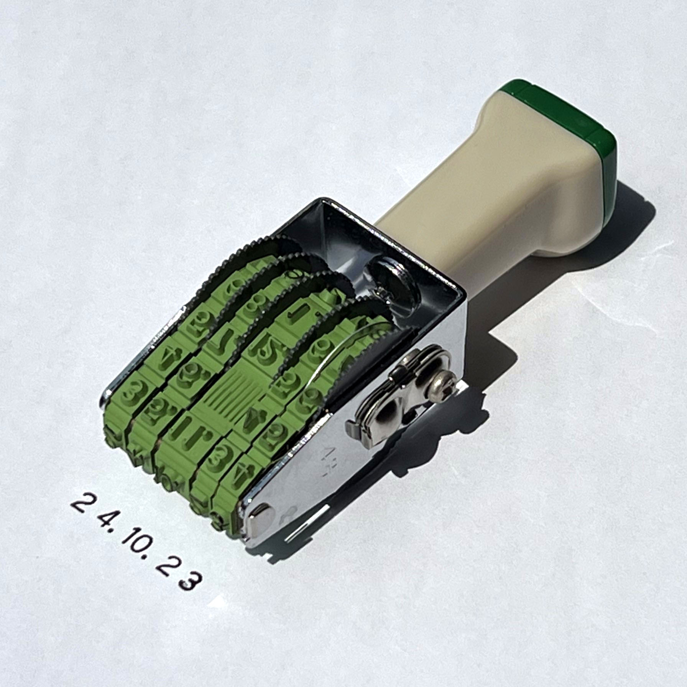

Live redactor workbench
Paste invoices, MyNumber, bank accounts, or TSV ledgers. Every mask and check digit computes inside this tab with zero network calls.
| Token | Rule | Chars | Status |
|---|
Verify before leaving
Built for Japanese text
Mixed full-width invoices, accounting stamps, and tabular ledgers stay exact.

Nine verified rules
Shared identically between this browser workbench, the Manifest V3 Chrome extension, and our Node test suite.
-
NTA Modulo-9
13-digit Corporate Numbers and T+13 Qualified Invoice IDs across full-width, half-width, and hyphenated formats.
-
MIC Modulo-11
12-digit Japanese MyNumber verification including remainder 0 and 1 check-digit edge cases.
-
Luhn Payment Cards
14- to 19-digit payment card check-digit verification rejecting repeated uniform digits.
-
Japanese Bank Accounts
Matches 普通, 当座, 貯蓄, and 定期 seven-digit account notations with full-width tolerance.
-
Domestic & +81 Contact
Detects 10- and 11-digit Japanese phone lines, international +81 numbers, 〒 postal codes, and emails.
-
Prompt-Injection Screen
Scores 8 English and Japanese instruction-override rules, role delimiters, Base64 blobs, and zero-width BiDi traps.
Run inside Chrome
Install the Manifest V3 extension to scrub prompts directly inside ChatGPT, Claude, and Gemini using the exact same local engine.
- Download
kurogate-chrome-extension-v1.0.0.zipfrom GitHub Releases and unzip locally. - Open
chrome://extensionsand enable Developer mode. - Click Load unpacked and select the extracted
extension/folder. - Use the corner 黒門 controls on supported LLM tabs to redact prompts and restore replies.
Download KUROGATE v1.0.0 for Chrome (Manifest V3, MIT license, zero telemetry).